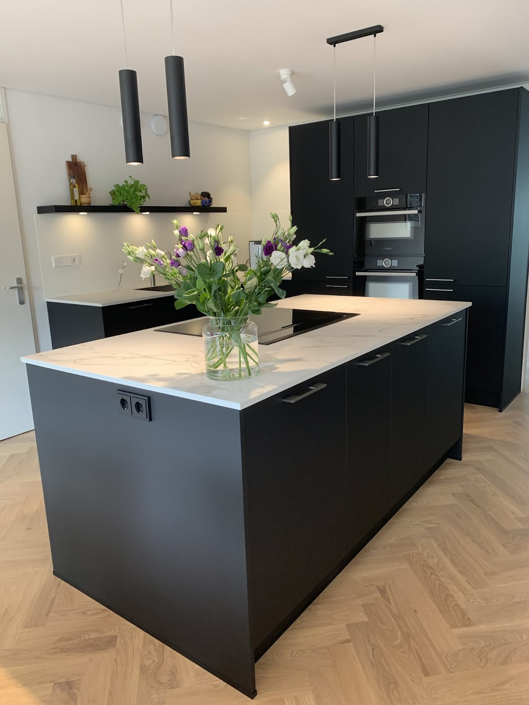
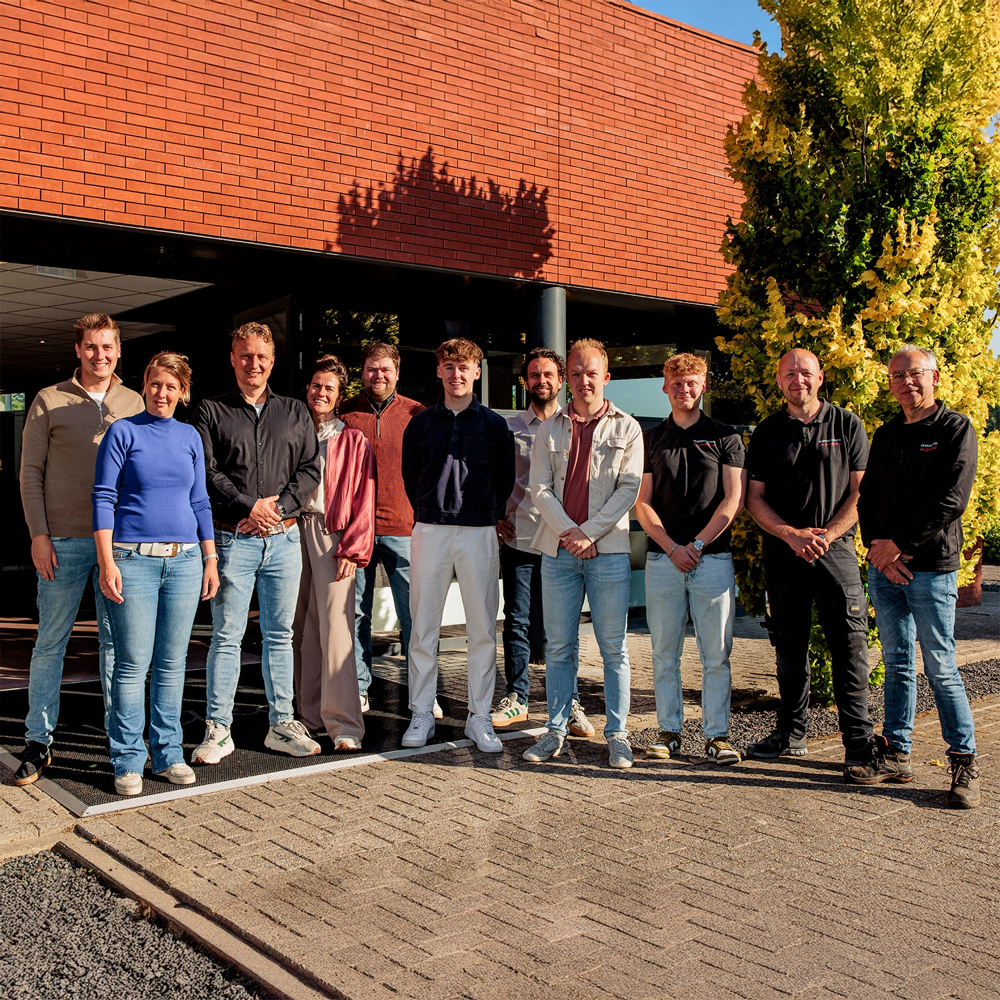
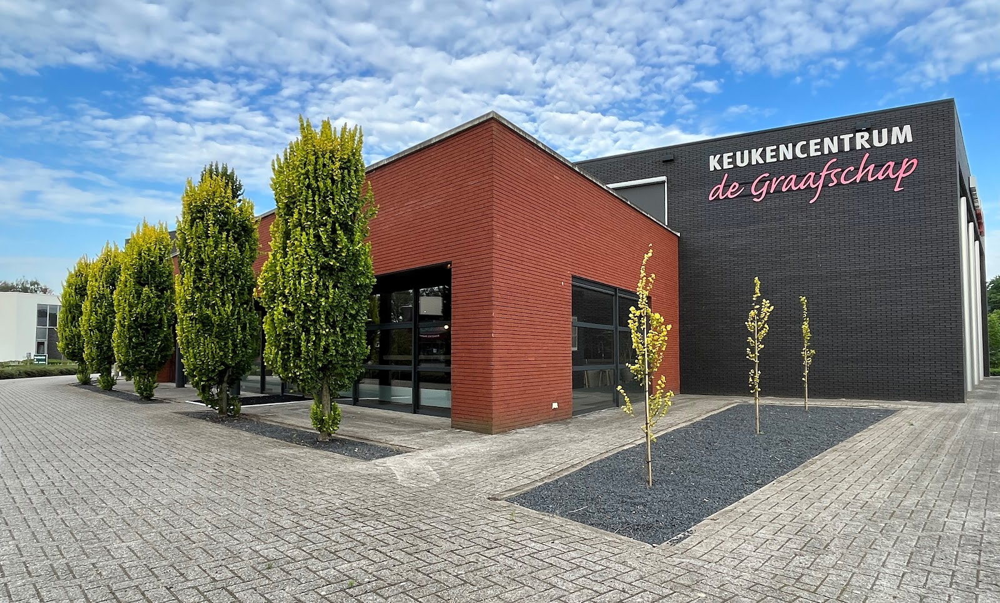
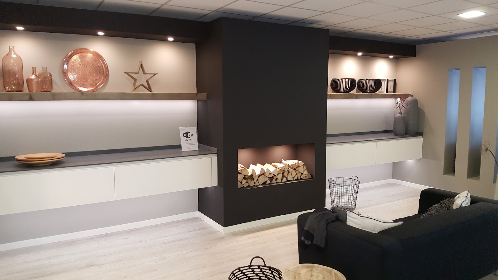
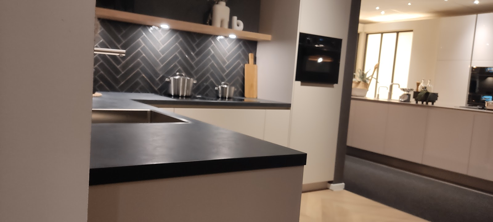
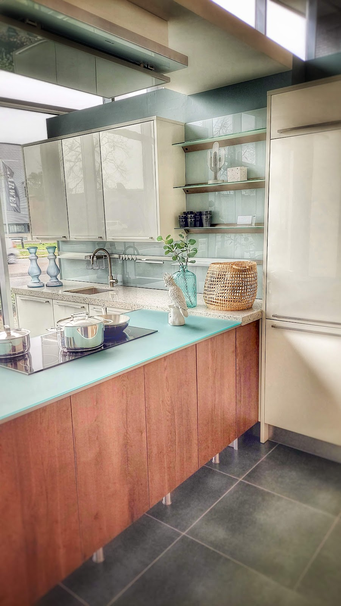
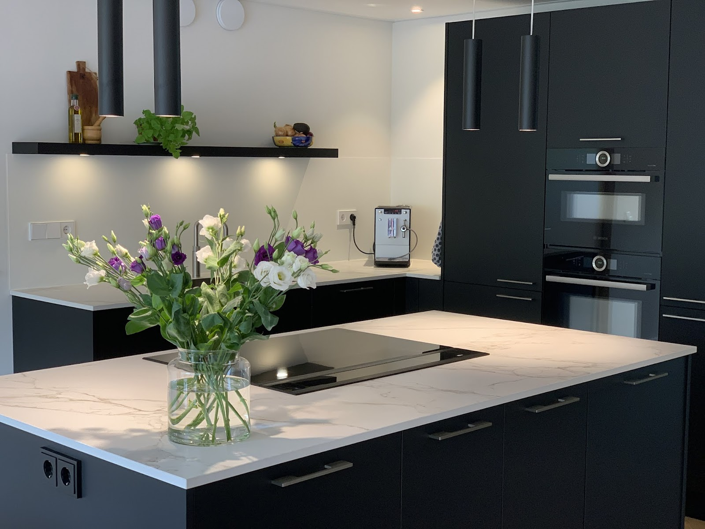
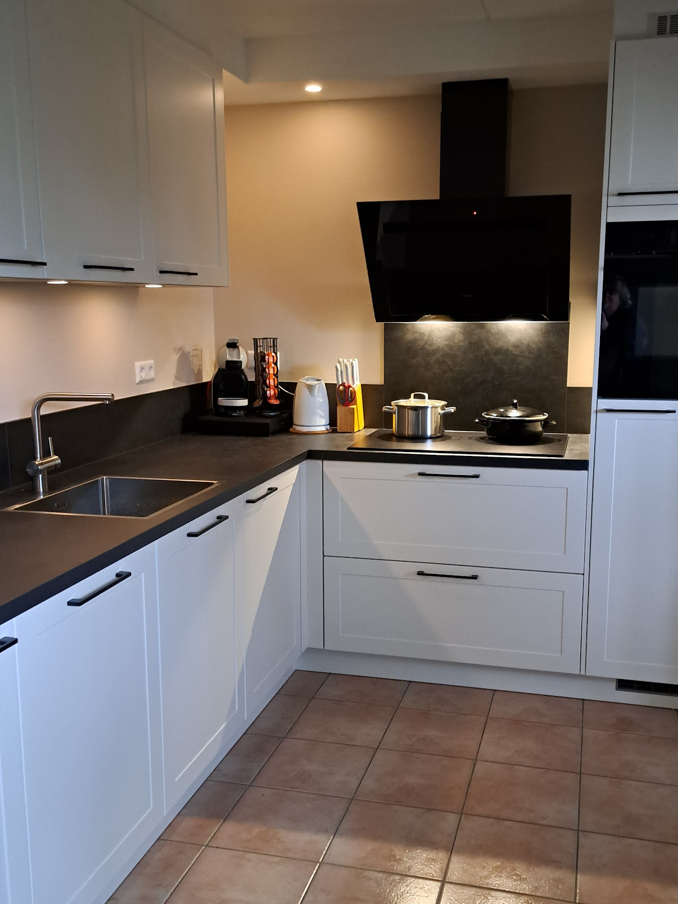

Keukenzaak in Aalten
Samen kiezen. Jaren genieten.
Een familiebedrijf met Achterhoekse nuchterheid: persoonlijk advies, vakkundige montage en een eerlijke prijs. Kom kijken in onze showroom en ontdek welke keuken bij u past.
4,8 uit 109 Google-reviews


Een familiebedrijf dat de tijd voor u neemt.
Al meer dan 50 jaar werken wij in de keukenbranche. Met onze Achterhoekse nuchterheid gaan we voor het beste voor u: persoonlijk advies, vakkundige expertise en een eerlijke prijs.
Elke keuken is anders, net als elk huishouden. Daarom ontdekken we samen wat bij uw wensen past. Of het nu gaat om een complete nieuwe keuken of het vervangen van uw apparatuur.
"Het is er gemoedelijk, onze verkoper was deskundig en vriendelijk, er heerste een hele prettige sfeer en er was zeer goede communicatie."
Loop binnen in onze showroom.
Zien, voelen en vergelijken: dat doet u het best in het echt. Kom met een adviseur, of kijk eerst rustig zelf rond. Op vrijdag zijn we open tot 20:00 uur.




Welke stijl past bij u?
Van modern tot landelijk en van Japandi tot industrieel. Voor elke smaak en woonwens staat er een keuken vol sfeer en comfort.
- Modern
- Landelijk
- Greeploos
- Hout
- Scandinavisch
- Japandi
- Industrieel
- Hotel chique


Twijfelt u over kleur of combinatie?
"Zo twijfelden we erg over de kleur en kleurencombinatie, hierin adviseerde hij echt perfect."
Marjo Weikamp
In zes stappen naar uw nieuwe keuken.
Bij een nieuwe keuken komt veel kijken. Wij begeleiden u bij elke stap, zodat u het hele traject zonder zorgen doorloopt.
-
1Inspiratie opdoen
Loop door de showroom en ontdek welke stijl, kleur en indeling u aanspreken.
-
2Keuzes maken
Samen met uw adviseur kiest u fronten, werkblad en apparatuur die bij uw manier van koken passen.
-
3Aankoop keuken
U krijgt een helder voorstel voor een eerlijke prijs. Pas als alles klopt, gaan we verder.
-
4Voorbereidingen
We meten de ruimte bij u thuis nauwkeurig in en stemmen de planning met u af.
-
5Bezorging & montage
Onze eigen monteurs plaatsen uw keuken, met oog voor detail en netjes opgeleverd.
-
6Service & garantie
Ook na de plaatsing kunt u bij ons terecht, bijvoorbeeld met vragen over uw apparatuur.
Merken waar we achter staan.
Ook als u alleen nieuwe apparatuur zoekt, bent u bij ons aan het juiste adres. We vervangen het netjes in uw bestaande keuken.
- Häcker
- Familiebedrijf sinds 1898. Tijdloos design met slimme opbergoplossingen.
- Schröder
- Duits familiebedrijf sinds 1926. Van greeploos modern tot klassiek, met fronten als Fenix en beton.
- Madebydas
- Puur Nederlands fabricaat: praktische, fraaie en betaalbare keukens.
- Bosch
- Betrouwbare inbouwovens, kookplaten, vaatwassers en koelkasten.
- Quooker
- De kraan die alles kan: kokend, gekoeld en bruisend water.
- Siemens
- Innovatieve apparatuur die koken en bakken tot een plezier maakt.
Wat klanten over ons zeggen.
4,8 uit 109 reviews op Google
"Wij zijn uitermate tevreden met onze schitterende nieuwe keuken van Keukencentrum De Graafschap! De keuken is niet alleen een echte eye-catcher in ons huis, maar biedt ook meer dan voldoende ruimte en gebruiksgemak."
"We hebben Remco gehad voor het advies mbt onze keuken. Remco is vriendelijk en denkt goed mee. Zo konden we snel tot een keuze komen. Zijn vader kwam bij ons de keuken inmeten. Vriendelijke man die zeer secuur de maten op nam."
"Dennis heeft mij perfect begeleid bij het kalibreren van een Bosch oven / magnetron waarvan de garantie al lang is verlopen. Ik stond al op het punt om een nieuwe te kopen maar op advies van Dennis heb ik eerst nog een keer de kalibratie op een juiste manier uitgevoerd. Apparaat werkt weer perfect !"
"19 jaar geleden kochten wij onze keuken bij De Graafschap Keukens. Destijds was dit een erg goede ervaring dus wij besloten eind vorig jaar weer naar hen toe te gaan. Remko heeft ons enorm goed geholpen."
"Onze keuze was gevallen op keukencentrum De Graafschap. En daar hebben wij geen moment spijt van gehad. De keuze was enorm in de mooie showroom."
Kom langs aan 't Boske.
Plan een afspraak op een moment dat u goed uitkomt. We nemen daarna contact met u op om die te bevestigen. Liever direct even overleggen? Bel ons gerust.
Bel 0543 47 28 55Openingstijden
| Maandag | 09:00 - 17:00 |
| Dinsdag | 09:00 - 17:00 |
| Woensdag | 09:00 - 17:00 |
| Donderdag | 09:00 - 17:00 |
| Vrijdag | 09:00 - 20:00 |
| Zaterdag | 10:00 - 16:00 |
| Zondag | Gesloten |